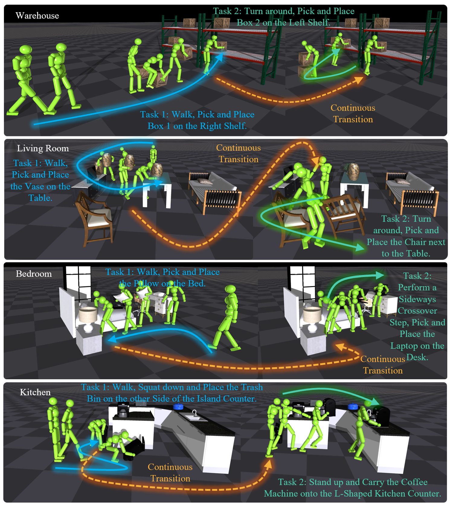
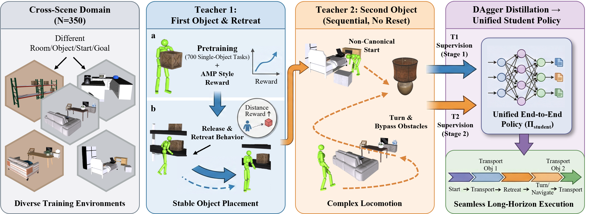
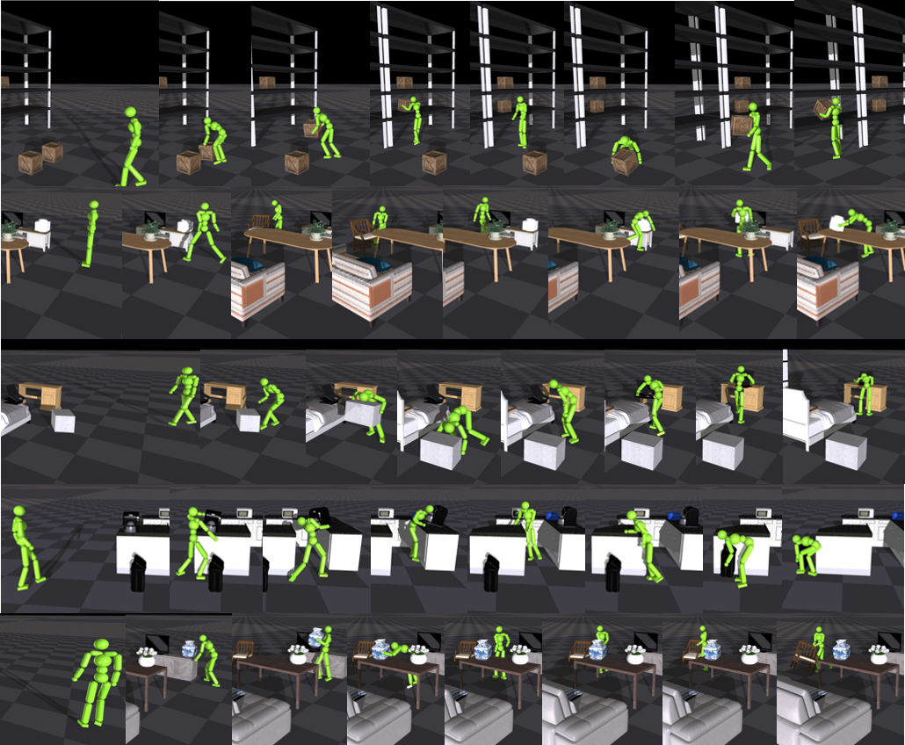

Abstract
Physics-based human motion control can make a simulated character walk, sit, and manipulate objects with high physical realism. Almost always, though, this happens in short, isolated clips that are re-initialized between interactions. We instead aim for continuous, reset-free long-horizon motion: a physically simulated humanoid that repeatedly walks to a displaced object, lifts it with a balanced whole-body posture, carries it past obstacles, and places it at a goal, over and over within a single uninterrupted take. The hard part is not any individual motion but the transitions between them. Without a reset, each cycle must end in a state that both leaves the object just placed undisturbed and lets the next cycle begin, yet every placement leaves the character off-balance in a non-canonical pose where naive end-to-end reinforcement learning fails. Our key idea is to treat this handoff as a two-sided problem of recoverability: the character must disengage from the object it just placed so the prior success is preserved, and settle into a state from which a balanced continuation exists. Instead of engineering a transition by hand, we learn to shape where each cycle ends so that it lands in this recoverable region. We introduce LHM-Humanoid. One goal-conditioned controller completes a fetch–carry–place cycle and, through a learned release-and-retreat behavior, steers its terminal state into this region; a second controller then takes over from the resulting state distribution. Both are regularized by an adversarial motion prior and distilled into a single goal-conditioned policy that runs the whole sequence as one reset-free rollout. Across 350 cluttered layouts spanning four room types, LHM-Humanoid produces far more successful and stable long-horizon motion than end-to-end RL, hierarchical RL, and prior physics-based human-scene-interaction methods, on both seen and unseen scenes. Trained only on two-object episodes, it extrapolates zero-shot to five-object sequences, where the baselines collapse to near-zero success. The resulting behavior can also be driven by egocentric vision and language.
Method

Qualitative results

Each row is one uninterrupted episode. Top to bottom: warehouse, living room, bedroom, kitchen, living room.